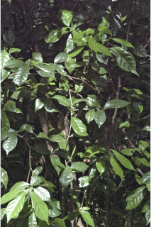
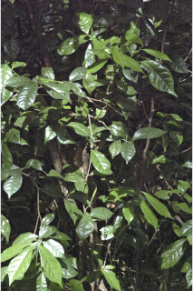
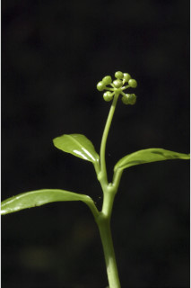
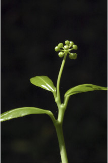
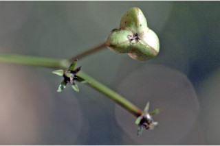
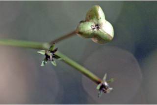

Trees up to 5 m tall.
5 ಮೀ. ಎತ್ತರದವರೆಗೆ ಬೆಳೆಯುವ ಮರಗಳು.
5 മീറ്റര് വരെ ഉയരമുളള മരങ്ങള്.
மரங்கள் 5 மீ. உயரம் வரை வளரக்கூடியது.
Bark smooth, pale brown.
ತೊಗಟೆ ತೆಳು ಕಂದು ಬಣ್ಣದಲ್ಲಿದ್ದು ನಯವಾಗಿರುತ್ತದೆ.
ഇളം തവിട്ട് നിറത്തിലുളള മിനുസമുളള പുറംതൊലി.
மரத்தின் பட்டை வழுவழுப்பானது, வெளிறிய ப்ரவுன் நிறமானது.
Branchlets terete, glabrous.
ಕಿರುಕೊಂಬೆಗಳು ದುಂಡಾಗಿದ್ದು ರೋಮರಹಿತವಾಗಿರುತ್ತವೆ.
ഉരുണ്ട, അരോമിലമായ, ഉപശാഖകള്.
சிறிய நுனிக்கிளைகள் குறுக்குவெட்டுத் தோற்றத்தில் வளையமானது, உரோமங்களற்றது.
Whitish sap from the cut end of leaves and twigs.
ಕತ್ತರಿಸಿದಾಗ ಎಲೆಗಳು ಮತ್ತು ಕುಡಿಕೊಂಬೆಗಳ ತುದಿಯಿಂದ ಬೆಳ್ಳಗಿನ ಸಸ್ಯ ರಸ ಒಸರುತ್ತವೆ
ഇലയും തണ്ടും മുറിഞ്ഞിടത്ത് നിന്നും വെളുത്ത സ്രവം ഊറുന്നു.
இலையின் வெட்டிய பகுதியில் மற்றும் தண்டின் உடைந்த பகுதியில் வெண்மை நிறமான திரவத்தை சுரக்ககூடியது.
Leaves simple, alternate or subopposite or sometimes spiral; stipules caducous; petiole 0.5-4.5 cm long, canaliculate, glabrous; lamina 5-15 x 2.5-4.5 cm, elliptic to obovate to oblanceolate, apex acuminate or caudate - acuminate, base gradually acute to cuneate, margin entire, subcoriaceous, glabrous; midrib raised above; secondary_nerves 6-8 pairs; tertiary_nerves admedially_ramified.
ಎಲೆಗಳು ಸರಳವಾಗಿದ್ದು,ಪರ್ಯಾಯ ಅಥವಾ ಉಪ-ಅಭಿಮುಖಿಗಳಾಗಿದ್ದು ಕೆಲವು ವೇಳೆ ಸುತ್ತು ಜೋಡನಾ ವ್ಯವಸ್ಥೆಯಲ್ಲಿರುತ್ತವೆ;ಕಾವಿನೆಲೆಗಳು ಉದುರಿಹೋಗುವಂತವು;ತೊಟ್ಟುಗಳು 0.5 – 4.5 ಸೆಂ.ಮೀ. ವರೆಗಿನ ಉದ್ದವಿದ್ದು ಕಾಲುವೆಗೆರೆ ಸಮೇತವಿರುತ್ತವೆ ಹಾಗೂ ರೋಮರಹಿತವಾಗಿರುತ್ತವೆ;ಪತ್ರಗಳು 5 -15 X 2.5 – 4.5 ಸೆಂ ಮೀ.ಗಾತ್ರ, ಅಂಡವೃತ್ತ ದಿಂದ ಬುಗುರಿ ,ಬುಗುರಿಯಿಂದ ಬುಗುರಿ-ಭರ್ಜಿಯವರೆಗಿನ ಆಕಾರ ಹೊದಿರುತ್ತವೆ;ತುದಿ ಕ್ರಮೇಣ ಚೂಪಾಗುವ ರೀತಿಯಲ್ಲಿರುತ್ತವೆ, ಬುಡ ಹಂತ ಹಂತವಾಗಿ ಚೂಪಾಗುವುದರಿಂದ ಬೆಣೆಯಾಕಾರದ ಮಾದರಿಯಲ್ಲಿರುತ್ತದೆ, ಅಂಚು ನಯವಾಗಿರುತ್ತದೆ. ಮೇಲ್ಮೈ ಉಪ-ತೊಗಲನ್ನೋಲುವ ರೀತಿಯಲ್ಲಿದ್ದು ರೋಮರಹಿತವಾಗಿರುತ್ತವೆ;ಮಧ್ಯನಾಳ ಪತ್ರದ ಮೇಲ್ಭಾಗದಲ್ಲಿ ಉಬ್ಬಿರುತ್ತದೆ; ಎರಡನೇ ದರ್ಜೆಯ ನಾಳಗಳು 6-8 ಜೋಡಿಗಳಿರುತ್ತವೆ; ಮೂರನೇ ದರ್ಜೆಯ ನಾಳಗಳ ಕವಲುಗಳು ಎಲೆಯ ಅಕ್ಷದ ದಿಕ್ಕಿನಲ್ಲಿರುತ್ತವೆ.
ലഘുവായ ഇലകള് ഏകാന്തരമായോ ഉപസമ്മുഖമായോ ചിലപ്പോള് സര്പ്പിളമായും അടുക്കിയിരിക്കുന്നു; അനുപര്ണ്ണങ്ങള് എളുപ്പം ഇളകിവീഴുന്നവയാണ്; അരോമിലവും ചാലുളളതുമായ ഇലഞെട്ടിന് 0.5 സെ.മീ മുതല് 4.5 സെ.മീ വരെ നീളം; പത്രഫലകത്തിന് 5 സെ.മീ മുതല് 15 സെ.മീ വരെ നീളവും 2.5 സെ.മീ മുതല് 4.5 സെ.മീ വരെ വീതിയുമാണ്, ആകൃതി ദീര്ഘവൃത്താകാരം തൊട്ട് അപഅണ്ഡാകാരമോ അപകുന്താകാരം വരെയാകാം, പത്രാഗ്രം ദീര്ഘമോ വാലോട് കൂടിയ ദീര്ഘാഗ്രമോ ആണ്, പത്രാധാരം നിശിതാഗ്രം തൊട്ട് ആപ്പാകാരം വരെയാകാം, അരികുകള് അവിഭജിതമാണ്, ഉപചര്മ്മില പ്രകൃതം, അരോമിലം; മുഖ്യസിര മുകളില് ഉയര്ന്നതാണ്; 6 മുതല് 8 വരെ ജോഡി ദ്വിതീയ ഞരമ്പുകള്; ത്രിതീയ ഞരമ്പുകള് അഡ്മിഡിയലി റാമിഫൈഡ് ആണ്.
இலைகள் தனித்தவை, மாற்றுஅடுக்கமானவை, அல்லது எதிரடுக்கம் போன்றவை அல்லது சிலசமயங்களில் சுழல் போன்று அமைந்தவை; இலையடிச்செதில் எளிதில் உதிரக்கூடியது; இலைக்காம்பு 0.5-4.5 செ.மீ. நீளமானது, குறுக்குவெட்டுத் தோற்றத்தில் கேனாலிகுலேட், உரோமங்களற்றது; இலை அலகு 5-15 X 2.5-4.5 செ.மீ., நீள்வட்டம் முதல் தலைகீழ் முட்டை முதல் தலைகீழ் ஈட்டி வடிவானது, அலகின் நுனியில் அதிக்கூரியது அல்லது வால்-அதிக்கூரியது, அலகின் தளம் கூரியது முதல் ஆப்பு வடிவானது, அலகின் விளிம்பு முழுமையானது, சப்கோரியேசியஸ், கீழ்பரப்பு உரோமங்களற்றது; மையநரம்பு மேற்புறத்தில் அலகின் மேற்பரப்பைவிட சிறிது உயர்ந்தது; இரண்டாம் நிலை நரம்புகள் 6-8 ஜோடிகள்; மூன்றாம் நிலை நரம்புகள் அட்மீடியல்லி ராமிபைடு.
Flowers unisexual; male flowers in slender pedunculate umbels; female flowers terminal fascicles.
ಹೂಗಳು ಏಕಲಿಂಗಿಗಳಾಗಿರುತ್ತವೆ.ಗಂಡು ಹೂಗಳು ತೆಳುವಾದ ಪುಷ್ಪ ಮಂಜರಿವೃಂತವುಳ್ಳ ಪೀಠಛತ್ರ ಪುಷ್ಪಮಂಜರಿಯಲ್ಲಿರುತ್ತವೆ; ಹೆಣ್ಣು ಹೂಗಳು ತುದಿಯಲ್ಲಿನ ಗುಚ್ಛಗಳಲ್ಲಿರುತ್ತವೆ.
പൂക്കള് ഏകലിംഗികളാണ്; ആണ്പൂക്കള് നേര്ത്ത പൂങ്കുലത്തണ്ടുളള ഛത്രമഞ്ജരികളാണ്; പെണ് പൂക്കള് ഉച്ഛസ്ഥ കൂട്ടങ്ങളായുണ്ടാകുന്നു.
மலர்கள் ஓர்பாலானவை; ஆண்மலர்கள் மெல்லிய மலர்காம்புடைய அம்பல்; பெண்மலர்கள் தண்டின் நுனியில் நெருக்கமான கொத்தாக அமைந்தவை.
Capsule, globose, deeply 3-lobed; fruiting_calyx erect; seeds 3.
ಸಂಪುಟ ಫಲಗಳುಗೋಳಾಕಾರದಲ್ಲಿದ್ದು ಆಳವಾದ 3 ಹಾಲೆಗಳ ಸಮೇತವಿರುತ್ತವೆ;ಕಾಯಿಗಳ ಪುಷ್ಪ ಪಾತ್ರೆರೆ ದಳಗಳು ನೇರವಾಗಿರುತ್ತವೆ ; ಬೀಜಗಳು 3 .
3 വിത്തുകളുളള കായ, ആഴത്തില് ത്രികര്ണ്ണിതമായ, ഗോളാകാര കാപ്സ്യൂള് ആണ്; കായോട് ഒട്ടിനില്ക്കുന്ന ബാഹ്യദളങ്ങള് കുത്തനെയാണ്.
வெடிகனி (கேப்சூல்), கோளவடிவானது, மூன்று பிளவுகளுள்ள அறைகளுடையது; புல்லி இதழ்கள் நிரந்தரமாக கனியுடன் காணப்படும்; விதைகள் மூன்று உடையவை.
 



 



 
